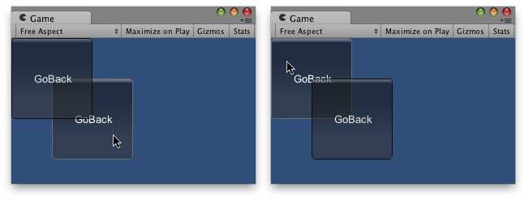

GUI.depth
public static int depth;
Description 描述
The sorting depth of the currently executing GUI behaviour.
Set this to determine ordering when you have different scripts running simultaneously.
GUI elements drawn with lower depth values will appear on top of elements with higher values (ie, you can think of the depth as "distance" from the camera).
Note:To see this example working, you will need to create 2
scripts. Remember to name the scripts with the same name as the class
names, else it will not work.

One Button behind the other.
using UnityEngine; using System.Collections;
// Makes this button go back in depth
public class Example1 : MonoBehaviour { public int guiDepth = 0; public Example2 example2;
private float buttonX, buttonY;
void Start() { buttonX = (Screen.width / 2) - 100; buttonY = (Screen.height / 2) - 100; }
void OnGUI() { GUI.depth = guiDepth; GUI.color = Color.yellow;
GUIStyle size = new GUIStyle("button"); size.fontSize = 16;
if (GUI.RepeatButton(new Rect(buttonX, buttonY, 200, 100), "Go Backwards", size)) { guiDepth = 1; example2.guiDepth = 0; } } }
And copy this other example to another script:
using UnityEngine; using System.Collections;
// Makes this button go back in depth
public class Example2 : MonoBehaviour { public int guiDepth = 1; public Example1 example1;
private float buttonX, buttonY;
void Start() { buttonX = (Screen.width / 2) - 50; buttonY = (Screen.height / 2) - 50; }
void OnGUI() { GUI.depth = guiDepth; GUI.color = Color.green;
GUIStyle size = new GUIStyle("button"); size.fontSize = 16;
if (GUI.RepeatButton(new Rect(buttonX, buttonY, 200, 100), "Go Backwards", size)) { guiDepth = 1; example1.guiDepth = 0; } } }